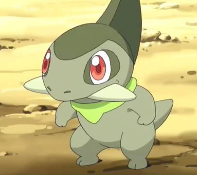

Favs da dex
dex
tipos
habilidades
Os queridinhos da Dex!
Aqui estão os favoritinhos da dex da semana!!
FAVORITOS DA SEMANA
O numero 1 da Pokedex se deu bem na nossa votação, conseguindo ironicamente o numero 1 da semana!!
O pseudo lendário de Johto deu as caras, o Mega Tyranitar caiu como o nosso segundo favorito!!

O inicial de grama favorito de Hoenn apareceu novamente!! garantindo o 3° lugar temos Sceptile

A fada voadora de Sinnoh deu as caras pela terceira semana seguida!! Togekiss em 4° lugar

O dragão fofinho de Unova é a novidade da semana, em 5° lugar temos Axew!

Ash Greninja, o favorito de muitos apareceu novamente! dessa vez em 6° lugar
Em sua versão gelada ele aparece perto do inverno, sandslash em 7° lugar
O queridinho de Galar deu as caras e com um som bem alto!! em 8° temos Toxtricity

Em sua nova versão, quem apareceu representando Hisui foi Zoroark! em 9° lugar
sobre o desenvolvedor
Sou péssimo com apresentações mas vamos lá kkkk, atualmente tenho 20 anos e estou cursando tanto a residência do serratec quanto Análise e desenvolvimento de sistemas, sou apaixonado por Pokemon desde que me entendo por gente, atualmente compartilho diversos projetos no meu Github como: HTML, CSS, Javascript, ReactNative, SQL, C++ e Java
envios
Quer indicar um favorito da semana? envia pra gente então!!
desenvolvido por Guilherme de Avellar
residência em TIC software 2024.1 - turma 18